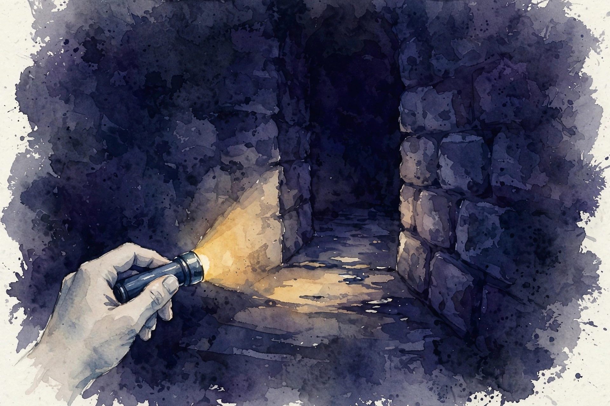

U08 · Inversion, style, and bounded rationality
We watch the choices. What goal explains them, and how wrong can we be? The choice underdetermines the goal. The surrogate diverges from the truth. Style masquerades as content. And the chooser is a satisficing, anchorable human, not a maximizer. This unit builds the inverse problem and names every way it lies.
Sourcing. No full transcript exists for sessions S14 and S15. This companion narrates content/v2/cs329h/lessons/u08_lesson.md. All twelve concepts are taught as independent theory: the lesson marks the sessions PLANNED and every concept PLANNED / SOURCE ATTRIBUTION PENDING.
How to read the tags. Every number carries its lesson section. Anything the companion computes is tagged Illustration. A Interpretation tag marks the companion's own reading of the lesson. Where the lesson leaves a value out, the page says so in words.
From the lesson A fact, number, or mechanism from the lesson.
Illustration Invented by the companion: an analogy, a toy with made-up values, or a what-if. Never lecture content.
Interpretation The companion's reading of why a lesson fact matters. The fact is the lesson's, the gloss is ours.
C01 · Contract 6 Points to the exact lesson section behind a claim or number.
Section 1 · C01, C07, C08
From the lessonC01 · Contract 3, 5, 6
A choice is evidence about the goal, not the goal itself. The map from goal to choice is many-to-one, so the inverse is one-to-many. The lesson toy: two goals, health and impressing the guest, both rank salad first among salad and burger. The observed pick is salad. The posterior over goals stays 0.5/0.5. The choice teaches nothing about which goal. This underdetermination is the fundamental limit of all inversion. Lesson figure u08_f01 draws the two goals arrowing into one choice.
From the lessonC07 · Contract 3, 5, 6
The inverse problem is estimation with the choice model as the likelihood. The lesson toy: A beats B twice, B beats C once, Bradley-Terry link, N(0,1) prior on scores. The MLE of the A-B gap diverges to infinity: complete separation, a 2-0 record, and the likelihood keeps rising with the gap. The MAP with the Gaussian prior stays finite: gap_AB = 0.802, gap_BC = 0.254. The prior does real work here: without it the "estimate" is an artifact of where the optimizer stopped.
From the lessonC08 · Contract 3, 5, 6
Rewards are not identified by optimal behavior. Potential-based shaping, F = gamma Phi(s') - Phi(s), changes the reward without changing the optimal policy. The lesson toy: 2-state MDP, gamma 0.9. Under r the Q-values are [1.0, 0.9]. Under the shaped r' they are [0.5, 0.40]. Same argmax, different values. Inversion from behavior alone cannot pick between them. The honest practice: identify rewards only modulo shaping, or fix a canonical form. Lesson figure u08_f07 draws both Q bars.
The choice underdetermines the goal. Posterior stays 0.5/0.5: the salad teaches nothing about health versus impressing.
MLE diverges on separation, MAP stays finite: 0.802 and 0.254. The prior does real work.
Shaping changes the reward, not the policy. [1.0, 0.9] and [0.5, 0.40] recommend the same action.
Section 2 · C02, C03
From the lessonC02 · Contract 3, 5, 6
A surrogate is a measurable stand-in for the true goal. We optimize the surrogate because the goal is hard to measure, and the gap between them is where hacking lives. The lesson toy: true goal G = quality = 0.8 - 0.6t, surrogate S = quality + 2 times clickbait with clickbait = t, policy parameter t in [0,1]. Optimizing S picks t = 1: S rises 0.8 to 2.2 while G falls 0.8 to 0.2. Goodhart in closed form: optimizing S hard moves the policy out of the region where the correlation held. Lesson figure u08_f02 draws both curves.
From the lessonC03 · Contract 3, 5, 6
Preference data mixes style and content. The lesson toy: content scores [0.9, 0.4], style scores [0.3, 0.9]. The annotator picks response 2. The totals: r1 = 1.2, r2 = 1.3. The style gap beat the content gap: 0.6 > 0.5. Style decided. A content-only deployment picks response 1. A reward trained on the mix learns the blend, and the blend may not be what deployment wants. Lesson figure u08_f03 draws the stacked bars.
Illustration The decomposition toy. Move the content and style scores. The browser totals them and names the pick.
0.9
0.3
0.4
0.9
Totals appear here.
From the lessonC03 · Contract 6 With the lesson's scores the readout must show totals 1.2 and 1.3, pick response 2, style the decider.
S rises 0.8 to 2.2 while G falls 0.8 to 0.2. The optimum of the surrogate is the ruin of the goal.
Style decided: 0.6 beat 0.5, totals 1.2 against 1.3. The annotator picked the writing, not the answer.
Section 3 · C04, C05, C06
From the lessonC04 · Contract 3, 5, 6
Bounded rationality: the chooser has a computation budget. With 100 options and a budget of 10 evaluations, the chooser satisfices: take the first option above the aspiration level. The lesson toy: utilities uniform on [0,1], threshold 0.8. P(find above 0.8 in 10 draws) = 0.8926. Mean chosen utility 0.882 at seed 0 over 20000 trials. A maximizer gets about 0.990. The choice reflects the procedure, not just the preferences. Lesson figure u08_f04 draws the curve against the budget.

From the lessonC05 · Contract 3, 5, 6
Behavioral bias lives in the choice procedure, but naive inversion reads it as preference. The lesson toy: anchoring shifts P(pick A) from 0.5 to 0.65. With bias b = 0.619, the logit of 0.65/0.35, a true gap of 0 looks like a gap of 0.619. The inversion without the bias term invents 0.619 utils of preference out of framing. Lesson figure u08_f05 draws the before and after bars.
From the lessonC06 · Contract 3, 5, 6
Assume a maximizer, meet a satisficer. The lesson toy: 5 options with utils [1.0, 0.8, 0.6, 0.4, 0.2], random order, threshold 0.7, budget 3, 20000 trials, seed 0. Simulated choice shares: [0.449, 0.452, 0.033, 0.033, 0.033]. The best option is chosen only 0.449 of the time: it is evaluated in just 3 of 5 positions. A maximizer model reads the misses as dislike. The inferred reward absorbs the procedure as preference: systematic error, not noise.
P(find above 0.8 in 10 draws) = 0.8926. Mean chosen 0.882 against the maximizer's 0.990.
The phantom gap: 0.619 utils of pure framing. True gap 0, invented gap 0.619.
Section 4 · C09, C10, C11, C12
From the lessonC09 · Contract 3, 5, 6
Debiasing subtracts an estimated bias from the observed margin. It assumes the bias model is right and the estimate is accurate. The lesson toy: true gap 0.5, length bias b = 0.3, observed margin 0.8. With b_hat = 0.3 the correction is exact: 0.5. With b_hat = 0.9 the corrected gap is -0.1, error 0.6, worse than the uncorrected error of 0.3. The bad correction doubles the error. The cure must beat the disease: |b - b_hat| < |b|. Lesson figure u08_f08 draws the four bars.
From the lessonC10 · Contract 3, 5, 6
One reward for everyone, or one per person? The lesson toy: two users with 8-2 and 2-8 records, true gaps +0.8 and -0.8, N(0,1) prior. The pooled MLE gap is 0.0: the users cancel. Per-user MAP recovers +0.90 and -0.90. Held-out: personalized predicts 0.85, pooled 0.50. The pooled policy is the worst of both: a mushy middle that pleases nobody. The failure case is thin data: 2 pairs per user and personalization overfits, held-out 0.45 against pooled 0.55.
From the lessonC11 · Contract 3, 5, 6
Carry uncertainty through the inversion. The lesson toy: posterior over gap_AB from the C07 data, 95 percent interval [-0.94, 3.31] on the grid. The interval is wide: with two observations even the sign is unsure. Acting as if the gap were exactly 0.802 overstates confidence badly. Report intervals, not points.
From the lessonC12 · Contract 3, 5, 6
The checklist for responsible interpretation: name the choice model, audit the biases, justify the pooling decision, report uncertainty, flag counterfactual claims as model-dependent. The lesson's honest sentence: "users prefer concise answers (gap 0.4)" becomes "under the BT model with length debiased at b_hat 0.3, the MAP content gap is 0.4, 95 percent interval [0.1, 0.7], the claim reverses if the bias model is wrong." An inverted reward is a model output, not a fact about humans.
The bad correction doubles the error: -0.1 against the uncorrected 0.8. The cure must beat the disease.
Wisdom index